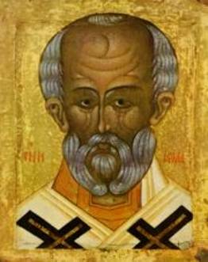

The Legend of the Three Students
There is no mention of the legend in any of the
Greek Lives of St. Nicholas, nor in
the account by Johannes Diaconus, either in its original form or in the
expanded version printed by Mombritius. This story is neither included in The Golden Legend nor in the Roman
Breviary. It seems to have been one of the elements added to the legend after
the development of love for St. Nicholas in the West. Its earliest record is
the French Life of St. Nicholas by
Wace. With the incident in the story, Wace connects the great honor paid to St.
Nicholas by schoolboys. “Because,” says Wace, “he did such honor to schoolboys,
they celebrate this day [Dec. 6] by reading and singing and reciting the
miracles of St. Nicholas.”
The first appearance of the complete story, indeed,
is in the eleventh- or twelfth-century plays from Hildesheim and Fleury. As in
the case of the Tres Filiae, the
Hildesheim play represents an earlier and simpler version, which has generally
been considered as the earliest form of the legend.
The fact that the legend of the three schoolboys
originated in Western Europe at a time and under circumstances which are
roughly known, enables Karl Meisen, the German authority, to offer more
concrete suggestions as to its source. His conclusion is that, in this case,
the legend came after a probably unofficial form of the patronage, and served
to both express and reinforce that patronage.
Most of the literary evidence, and the earliest pictorial representations are to be found in the north of France, which suggests that the miracle of the three students, like the other legends from the West, originated there. Its special interest is that it grew out of his being made patron of students, whereas with all his other patronages, it was the other way about – the miracle story inspiring the choice of patron.
“It was therefore up to the gift of invention and combination among Western story tellers,” Meisen writes, “to fill this gap and to create a narrative showing Nicholas specifically as the helper of students. Once such a story existed, medieval concepts acknowledged that there was now a concrete basis for a newly developed student patronage.”
The twelfth-century Life of St. Nicholas by Wace, written to explain to the unlettered
the purpose of the Feast of St. Nicholas newly instituted in the West, contains
a number of episodes not included in the more or less official account in The Golden
Legend.
Another legend, recounted by Wace, offers analogies
to the story of the Tres Clerici, and
certain elements are borrowed from it by later writers. It concerns a merchant
on a pilgrimage, who stopped at an inn and was murdered by the innkeeper on
account of his wealth. The murderer, first cutting off the arms and legs,
concealed his victim in a pickling tub, and went off to bed. In the meantime,
Nicholas, dressed as a knight, arrives at the inn and finds the dismembered
merchant. He lingers only long enough to restore him to life and comfort him,
although the victim cannot recall his unpleasant experience. In the morning the
merchant innocently greets his amazed host, who confesses his crime.
Another dramatic treatment of the legend has been
preserved in fragmentary form in an Einsiedeln manuscript of the twelfth
century. It begins with the appearance of Bishop Nicholas as a pilgrim, but
develops the remainder of the story in greater detail. The roles of the wife
and the bishop become more important than in either of the other two versions.
Nicholas is particularly aghast at the woman’s complicity in the crime. He personally
restores the dead students to life, without any prayer.
In the thirteenth and fourteenth centuries, the
outward appearance of the students begins to change. The resurrected victims
became younger as the St. Nicholas patronage began to extend to younger pupils
and preschool children. Who, after all, stood more in need of protection in an
uncertain and hostile world than the small and helpless child?
Both of these legends occur in substantially the
same form in an expanded version of the Vita
by Johannes Diaconus in a Brussels manuscript of the thirteenth century, which
has been overlooked by commentators of the Tres
Clerici legend.
The fourteenth-century Old French Vie de St Nicolas relates the legend in
twelve quatrains. The poet is careful to emphasize the poverty of the escoliers, who, on their way to school,
spend the night with a butcher. Thinking their bags are full of money, he kills
them, but finds nothing but books. When the bodies have been salted away,
Bishop Nicholas arrives and is served fresh meat. He tells the butcher that he
will accept only salted meat and, on being told there is none, accuses the
butcher of his crime. Nicholas then revives the boys in their tub, and the
narrative ends with an injunction to all students to honor St. Nicholas.
A similar account, except that the innkeeper is not
a butcher, is found in a fifteenth-century Liber
Miraculi Sancti Nicholay De Tribus Pueris.
The legend of the clerici is found as an addition to the life of Nicholas in the South English Legendary, and in the
ninety-six lines devoted to it we find the most complete version of the legend
in medieval literature. Three clerks, weary and hungry, ask for lodging at a
butcher’s house, the only one in sight. The butcher refuses their plea, but
when his wife suggests that they may pay well for the privilege, he calls them
back and gives them a good dinner.
The husband bids his wife fetch his ax, and she
readily approves his design to kill the sleeping clerks. After the murder, the
butcher is full of regret over having found nothing in the boys’ bags, but his
resourceful wife suggests making pastries and pies to sell. This they do, and
Bishop Nicholas is later one of the prospective customers. He insists on having
some of the meat direct from the salting vat, whereupon the butcher confesses,
and leads him to his house. The two murderers ask and receive forgiveness, the clerks are brought to life and make
handsome acknowledgment of the miracle.
Presumably inspired by this account is the following
stanza from a fifteenth-century song in honor of St. Nicholas:
“He reysyd thre klerks fro deth to lyfve,
That wern in salt put ful swythe,
Be-twyx a bochrere and his wyfve,
And was hid in privyte.”
It will be seen that by the fifteenth century the Tres Clerici legend had fixed the
murderer as a butcher, who regularly hid the victims in a pickling-tub. Not
very long after this period arose the still popular French folk-song or complainte, which preserves the outline
of the story but makes one or two changes. In this version three children go
out to the fields to glean but lose their way after sundown and ask lodging
from a butcher. From this point the action corresponds exactly with the version
in the English Legendary, except for
the children’s prayer to Nicholas. After the murder an interval of seven years
elapses before the arrival of Nicholas, who is given a hearty reception but
refuses the ham and veal he is offered for dinner, insisting instead on having
the salted meat that has been in the pickling-tub for seven years. The butcher
dashes out the door at this demand, but Nicholas promises him forgiveness and
brings to life the boys, who admit having had a good sleep.
First printed and made popular by Gérard de Nerval, the complainte has been frequently reprinted and even exists on a
phonograph record. Doncieux, in his critical text of the poem and melody,
assigns its origins to the seventeenth century in Champagne, and connects it
with the cult of the Saint in nearby Lorraine. Kayata publishes a version whose
melody differs slightly from that of Doncieux, and indicates a
sixteenth-century manuscript as his source, but without further indication of
the manuscript. A version noted by Doncieux is published by Remy de Gourmont,
who finds a close resemblance in certain passages to the Fleury play. The
melody is the alternative one mentioned by Doncieux, derived from the
traditional Tantum ergo.
Its popularity in the second half of the last
century resulted in a number of treatments of the legend, all of which include
the seven year interval and seem to ignore the medieval versions. The first to
dramatize the complainte was Gabriel
Vicaire, whose poem was twice set to music. Another musical setting by a
prominent composer was furnished by Guy Ropartz, to a text by René d’Avril, and the legend was also dramatized
by Père Delaporte and by Henri Ghéon. The complainte is the basis of the prose account in the Flemish setting
of Demolder and is the point of departure for Anatole France, who supplies his
own explanation of the origin of the legend and adds a flippant epilogue
recording the subsequent adventures of the three boys.
The story is sometimes treated as a religious
allegory, referring to the conversion of sinners or unbelievers. In some
pictures, the host is represented as a demon with hoofs and claws.
This legend rapidly becomes the most popular of all
in France and England.
The macabre quality of the student legend provided
elements that the Middle Ages favored. Moreover, the students needed a legend
of their own. Sailors could cite many of Nicholas’ rescues. Those who found
themselves unjustly treated could point to the story of Emperor Constantine’s
three generals, but there was no student miracle.
It was therefore up to the gift of invention and combination among
Western storytellers, Melsen writes, to fill this gap
and to create a narrative showing Nicholas specifically as the helper of
students. Once such a story existed, medieval concepts acknowledged that there
was now a concrete basis for a newly developed student patronage.
In general, the legends about children always tell
of the rescue of some child, usually an only son, from mortal danger – never
mentioning the giving of presents as we might expect on the grounds of
present-day customs. We should, however, bear ‘in mind that it has been only in
the time since the Reformation that
the significance of St. Nicholas for the small child has rested almost
exclusively on the bringing of gifts. In the old days the Saint brought
happiness to children in more than one way, and was believed to help them
especially in sickness and in other dangers. He brought blessings to families,
and in many medieval stories childless parents successfully invoked him.
Expectant mothers would pray to him for assistance during confinement.
Most of the literary evidence, and the earliest
pictorial representations are to be found in the north of France, which
suggests that the miracle of the three scholars, like the other legends from
the West, originated there. Its special interest is that it grew out of his
being made patron of scholars, whereas with all his other patronages, it was
the other way about – the miracle story inspiring the choice of patron.
In a wood carving of the Golden Legend produced in
Lyons in 1488, and also in a miniature from the Hours of Anne of Brittany by
Jean Bourdichon, the boys whom the bishop has brought to life in their tub are
wearing the tonsure. When St. Nicholas’ patronage was later extended to young
school children, the three children came to be put in place of the students.
.
Thought to Ponder:
Thought to Discuss around the Dinner Table:
The Legend of the Three Students
